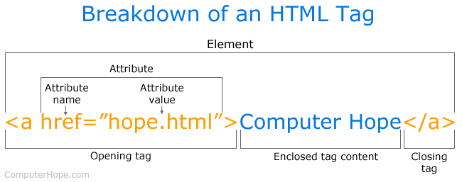
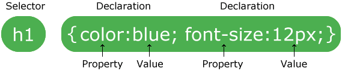
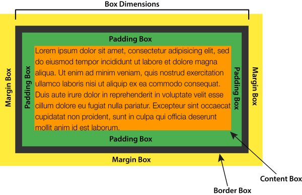
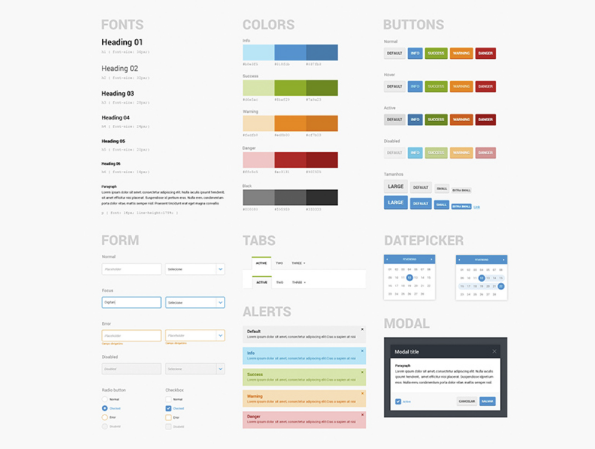
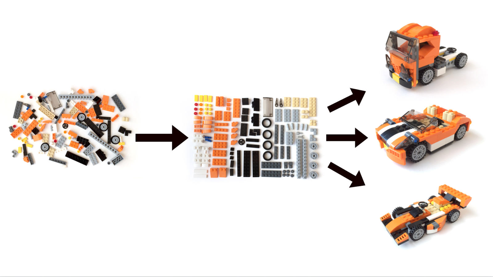
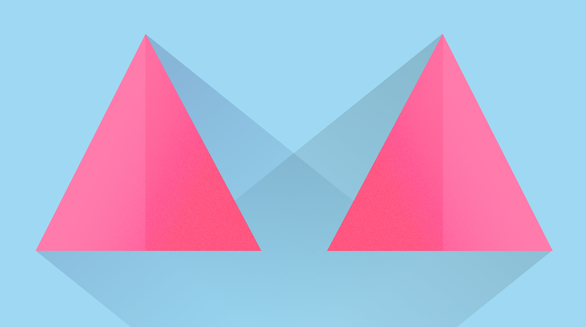
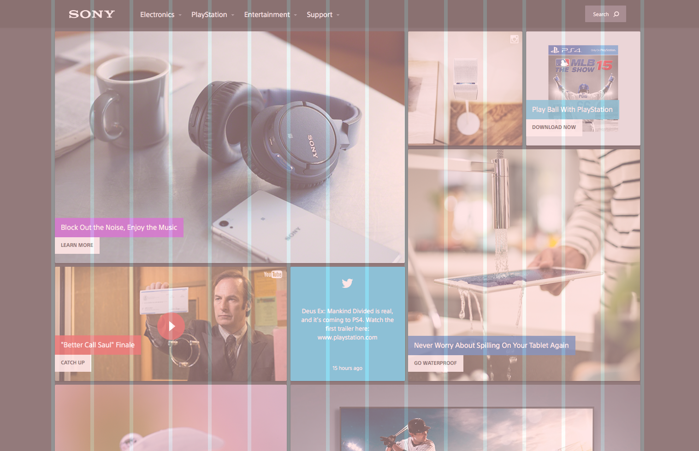
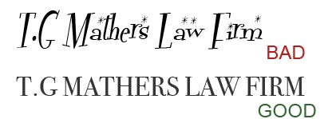
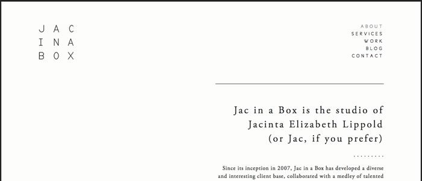

Dans cette ressource, nous allons revoir HTML et CSS dans un bref retour. Nous te donnerons les tags principaux, ainsi que les styles principaux.
On a pas mal vu déjà :)
Nous allons te donner les tags HTML principaux. Pour chaque tag, nous allons te rediriger vers la page correspondante de la W3Schools, qui est une bonne référence pour avoir plein d'exemples en front.
<!DOCTYPE html>
<html>
<head>
<title>Page Title</title>
</head>
<body>
<h1>This is a Heading</h1>
<p>This is a paragraph.</p>
</body>
</html>Voici une belle image de ComputerHope qui explique les différents éléments d'un tag HTML :
Tu peux voir comment jouer avec les titres sur cette page.
Tu peux voir comment jouer avec les paragraphes sur cette page.
Tu peux voir comment jouer avec les images sur cette page.
Tu peux voir comment jouer avec les liens sur cette page.
Tu peux voir comment jouer avec les listes sur cette page.
Tu peux voir comment jouer avec les tableaux sur cette page.
Pareil que pour le HTML, nous allons te donner les attributs CSS principaux. Pour chaque attribut, nous allons te rediriger vers la page correspondante de la W3Schools, qui est une bonne référence pour avoir plein d'exemples en front.
Voici une belle image de W3Schools qui explique les différents éléments de la syntaxe CSS :
Tu peux voir comment jouer avec les couleurs sur cette page.
Tu peux voir comment jouer avec les images de fond sur cette page.
Tu peux voir comment jouer avec les textes sur cette page.
Grâce à cette image de SitePoint, voici comment sont organisés les modèles de boite en CSS :
Tu peux voir comment jouer avec les liens sur cette page.
Pour appeler facilement un élément, tu peux aller sur ce lien. Et voici un testeur intéractif.
W3Schools, c'est très pratique. Puisque c'est toi, nous allons te proposer 2 cheat sheets qui contiennent tout ce que tu veux savoir en HTML et CSS :
Tu peux explorer W3Schools, mais l'entrainement est ce qu'il y a de mieux.
Le design par composants (Atomic Design) a révolutionné la façon dont nous travaillons les sites internet. Les atomes sont les fondations de tout site internet et avec une série d'atomes bien désignés, et il suffira de les assembler pour avoir un site qui ressemble à quelque chose.
Dans cette ressource, nous verrons les éléments qui composent un kit UI, puis nous te dirons les indices pour la construction de ce dernier.
En 2016, un certain Brad Frost sort un livre qui revoit la façon dont nous concevons les pages web : Atomic Design. Cette théorie demande de revoir les pages web non pas comme les pages d'un livre, mais comme une construction de briques basiques que tu vas réutiliser dans toute ton application. Dans ses conférences, il aime citer Stephen Hay pour expliciter sa théorie :
We're not designing pages, we're designing systems of components
Ce concept a le mérite d'aller de pair avec la programmation, notamment celle de Ruby. En effet, c'est bien plus DRY de faire button * 23 plutôt que de copier-coller le button plein de fois. Nous allons donc te montrer comment adapter le design atomique à un kit UI.
Avec l'avènement de Bootstrap, nous avons pu voir une multiplication du design par composants. Les boutons, formulaires, cartes et autres navbar représentent une majeure partie du web et deviennent en fait les seuls éléments différenciants dans une application. Afin d'éviter de faire en sorte que tous les sites ne ressemblent à des clones de Bootstrap, les designers ont commencé à sortir des kit UI, qui sont grosso modo la charte graphique appliquée aux éléments de ta page.
Je t'invite à regarder la super conférence d'Audrey Hacq au sujet de l'atomic design qui explique en 30mn les enjeux et le pourquoi de ce système.
Tu pourras trouver un exemple de kit UI avec celui de Now UI kit. On peut y voir certains aspects forts comme :
Ainsi, un kit UI permet de donner une identité à ton site internet. Aujourd'hui, tout site se doit d'avoir un kit UI clair et défini, ce qui permettra d'avoir beaucoup de consistance dans son design.
Dans cette ressource, nous allons avoir une approche très code d'un kit UI. La plupart du temps, ces derniers sont faits par des designers sur des logiciels pro (sketch, invision), mais puisque nous sommes des stars nous allons passer directement sur CSS pour les faire.
De plus, comme tu peux le voir, le kit UI est un concept qui va extrêmement bien avec le design atomique : il te suffit de créer ton kit UI et tu as tous les atomes de ton application (et même certaines molécules (carte) ou organismes (navbar)) ! Nous allons donc parler des deux, sachant qu'ils sont très complémentaires.
La métaphore la plus utilisée pour bien comprendre le système de design atomique est celle des Legos. J'ai des briques de couleur, forme, et taille particulières (atomes). Ces briques me permettront de construire un tas d'éléments (molécules), qui permettront de constuire ton objet final.
En France, Audrey Hacq est probablement la plus grande évangélisatrice de l'atomic design, et a écrit plein d'articles à ce sujet. Je t'invite à lire celui sur L’atomic design et la créativité, où elle explique la métaphore des legos, et elle sort même une autre métaphore : celle de la musique.
Concrètement, penser design atomique te permettra de faire des pages très rapidement. Cela ne parait pas très intuitif car, comme pour les méthodes Ruby, on se dit que cela ne sert à rien d'ajouter de la complexité quand il suffit de faire sa page web. Hop, au lieu de faire un kit UI, on a fait la page d'accueil de notre site.
Oui, mais non, pour plusieurs raisons :
Sachant ceci, voici le flux de travail d'un design atomique :
Ainsi tu peux voir que l'on va se prendre un peu la tête au début pour définir la charte graphique, construire les molécules, mais c'est pour gagner du temps par la suite. Un peu comme la constuction de models sous Rails : avec des molécules et organismes solides, tu as juste à ajouter la surcouche qui va bien et tes pages feront pro sans forcer.
Ainsi, il te faut arrêter de penser ton site page par page, mais le penser comme une succession d'organismes mis à la suite. Pense tes organismes et molécules très génériques, car ils vont être réutilisés partout dans ton application.
Prenons l'exemple du site Eventbrite. Ce dernier peut être décomposé en quelques organismes qui constituerons la majorité de ton site :
.each sur la molécule carte qui présente un événementBref, tu vois le principe. Le fait de penser générique et molécules permet de donner de la consistance dans ton application, ce qui lui donnera un rendu plus pro. Et c'est plus rapide que de faire les pages une par une.
Voici les éléments que nous retrouvons dans un kit UI. Si tu les designes tous, tu auras les legos de base de toute application.
Une identité visuelle passe par les couleurs. Si ton site est en magenta ou en vert de base HTML, c'est moche. Voici ce que nous te conseillons de choisir comme couleur :
warning, danger, success, info qui permettront de designer tes alertes ou tes boutonsAvoir des jolies couleurs n'est pas chose aisée, nous te proposons cet article de Neal O'Grady qui explique les concepts de couleurs, puis voici quelques sites pour choisir des jolies couleurs :
La typographie correspond à tout ce qui est police d'écriture. Comme pour les couleurs, ce sont des détails qui mine de rien changent beaucoup de choses. On ne va pas utiliser une Helvetica Neue comme on va utiliser Avenir. La typographie va correspondre à :
<h1>, <h2>, etc)<p>)<blockquote><small>)Pour chaque élément, il te faudra décider de la taille, du weight, et de la police. Voici quelques conseils :
Pour avoir des exemples de combinaison de police, tu peux aller sur deux sites très respectables : Typewolf et Google Fonts. Si tu veux un peu de lecture à ce sujet, voici un article de awwwards à ce sujet. Enfin, voici un guide de survie du design par la corsaire Sandrine
Les boutons sont un élément central de toute application. Tu devras en faire, et il y a moultes façons de designer un bouton. Pour t'inspirer, va sur tes sites préférés, et regarde comment ces derniers gèrent les boutons. En général tu devras manipuler :
Les formulaires sont partie intégrante de ton site. C'est l'endroit où tu vas récupérer l'information. En général, TU vas devoir gérer :
<input> :
Comme tu peux le voir dans cet exemple, cet exemple et cet exemple que les formulaires peuvent pas mal changer d'un kit UI à l'autre.
Un site va beaucoup utiliser les icônes. Il te faut donc choisir une série d'icônes qui ira bien avec ton design. Voici une liste de sites proposant des icônes :
Il existe plein d'autres éléments pour agrémenter ton kit UI :
La plupart des kits UI comprennent aussi des molécules et des organismes. Ainsi, on peut souvent y voir des navbars, des cartes, et d'autres. Tu peux retrouver une liste classique de ce que tu peux voir dans un kit UI dans la partie components de Bootstrap.
L'atomic design permet de comparer les parties d'une page web avec des constructions de petites briques. Il faut bien définir la taille, la couleur, et la forme de ces briques. Lorsque l'on a défini à quoi ces briques ressemblent, nous pourrons les assembler pour créer des bouts. Puis il n'y aura qu'à appeler les bouts pour construire notre page.
Les briques de Legos (les atomes) peuvent être assimilées à un kit UI : ce dernier va représenter une application de la charte graphique de ton site sur les éléments basiques de ton application. Ainsi ces éléments seront :
Voici quelques ressources pour mieux appréhender le design atomique :
C'est assez compliqué de trouver les raisons qui font un bon et un mauvais design. C'est avant tout une question de goût pour beaucoup. Cependant, il y a des tendances sur le web, et c'est important de les respecter si tu veux pas que l'on trouve ton site chelou. Un peu comme si tu te mettais subitement à t'habiller en robe Louis IV au travail. Au final, c'est tes goûts mais tes collègues te regarderons comme ça : 😳 Heureusement il existe pas mal de règles qui marchent très souvent, et avec lesquelles tu va être sûr de ne pas faire un design trop naze.
A chaque fois qu'on me parle de design, j'entend les non-initiés qui me disent "ouais mais moi je ne suis pas créatif je n'y arriverai pas". Et bien figure-toi que tu n'es pas obligé de naitre avec un master en design pour savoir designer un site internet ! La créativité peut-être déclenchée, il y a tout un tas de facteurs. Tu peux aller voir le très bon article de nos copains Welcome to the jungle à ce propos pour booster ta créativité
Avant l'invention du css en 1998, le design web c'était... compliqué. Le js venait d'être inventé en 1995, et c'était pas ouf. Heureusement, les grilles et les frameworks comme bootstrap de twitter arrivent en 2007. Après l'arrivée du responsive en 2010, on commence à sortir la tête de l'eau, surtout par l'arrivée du flat (encore très présent sur le web) la même année. Sauvés !
Il existe tout un tas de "règles" qui te permettront d'avoir un design plus que potable si tu les suis. En voici quelques unes, les plus importantes à nos yeux !
C'est assez simple, si on garde cette notion d'équilibre en tête. Un design équilibré, c'est ne pas charger un côté d'une page plus qu'un autre par exemple, pour éviter que le regard porte trop d'un côté.
Observe bien cette image : tu as une symétrie parfaite, qui rend ces deux triangles plutôt agréables à regarder. Maintenant, pense à un exemple opposé et garde le en tête pour plus tard ;)
Pour le coup, je pense que celle-ci te parlera. Tu as déjà été confronté à quelqu'un qui rangeait ses icônes de bureau sans suivre une grille (M. Martin, ton prof de techno au lycée). Et tu as regardé son écran en pleurant, te demandant comment il s'y retrouvait ! C'est exactement ça qu'il faut avoir en tête : une grille va te permettre d'harmonieusement constuire ton site. Dans tous les métiers du design, on utilise des grilles. En photo par exemple, il existe la règle des 3 tiers : 1 tiers pour le sol, 2 tiers pour le ciel.
Je te propose de lire cet article sur le système des grilles afin de comprendre un peu mieux pourquoi, et comment ça marche.
Je te propose d'observer la construction de la page, et de comprendre comment celle-ci est construite. Garde ça à l'esprit : la symétrie, c'est beau. Et très utilisé (coucou bootstrap qui découpe les pages en 12)
"Ce site il pique les yeux". Ca vous parle ? Vous avez souvent entendu (et vu) ça. C'est un classique, le site est aussi chargé qu'un sapin de Noël, il brille de mille feux, et nos pauvres petits yeux s'en plaignent.
Pour lutter contre ce fléau, il existe une ou deux astuces:
Souvent, tu remarqueras que les sites que tu trouves beau gardent une police relativement "classique", à savoir des polices dîtes "bâtons". Elles permettent une meilleur lisibilité, moins de fatigue occulaire (surtout pour les textes longs).
En gros, voilà un exemple assez concret :
Il est plus facile de lire une police que l'autre, non ?
C'est quelque chose qui revient assez souvent : des sites trop surchargés sont illisibles. Le but est d'épurer son site au maximum. D'ailleurs vous entendrez très souvent le fameux Less is more, qui reprend un peu cette idée. Moins tu vas mettre d'éléments sur ta page, plus elle sera lisible. Une bonne pratique d'ailleurs, serait d'enlever autant d'éléments que tu peux. Ainsi, tu as juste ce qu'il faut sur la page. Et si tu peux continuer à en enlever, fais le !
Tu peux par exemple t'inspirer de ce site, très lisible. Tu en apprendra plus à cette adresse sur les espaces blancs
Et ouais, c'est pas nouveau, on vous le répète souvent mais c'est parce que c'est très important. Un site web doit rester simple en toute circonstance. Pourquoi ?
Un des meilleurs moyens de savoir si ton design est bon, c'est d'avoir des retours dessus. Bon ou mauvais, prends-les en compte ! Fais corriger ton design par tes camarades / collègues / amis, et soit prêt à en prendre plein la tronche !
D'ailleurs, qu'est ce qui te dérange dans cette ressource en terme de lecture ? Fait une liste des défauts, tu verras que tu en trouveras plein. Garde les en tête, et essaye de les éviter aussi ;)
Oui je sais, je suis un filou. Mais je m'explique : un des principes de base de la créativité, c'est de connaître les règles pour pouvoir s'en affranchir. Bien sûr, c'est à manier avec des pincettes, mais tu seras capable de créer beaucoup de belles choses si tu improvises. Je sais que ça sonne un peu métaphysique, mais essaye par toi même, et tu verras que tu créeras facilement de beau designs si tu contournes les règles... Mais une fois celles-ci maitrisées.
Comme je vous l'ai dit plus haut, faire un bon design c'est assez complexe. Vous devez surtout vous approprier des règles, des idées et les transformer à votre sauce. Pour ce faire, rien de plus simple : il faut observer ce qu'il se fait, lire, regarder des beaux sites webs.
Par exemples, voici quelques sites qui vous inspireront :
Enfin, jete un oeil sur ces bonnes pratiques d'UI pour améliorer ton interface. N'hésite pas à y revenir souvent !
Dans ce projet, nous allons te faire réviser le CSS et le design en
te demandant de créer toi-même ton propre kit UI ! Tu vas pouvoir
appliquer tes compétences en design, marketing, ou bon sens à un fichier
index.html qui affichera de manière bien présentée ton kit (un peu comme cette présentation d'un kit UI sur uibundle).
Tu vas devoir trouver les couleurs de ton site, la typographie, designer des éléments comme les boutons et d'autres. Grâce à ce kit UI, tu pourras concevoir facilement des molécules, des organismes, et tu auras un super thème pour ton futur site internet.
Pour ce projet, il est interdit d'utiliser un framework existant tel que Bootstrap. Cela permettra deux choses : la première est (aussi) de te faire travailler le CSS, et partir de rien est la meilleure des façons. La seconde est qu'il n'est pas très aisé de changer un fichier Bootstrap déjà existant sans bien connaître les règles CSS.
Dans ce projet, nous allons te donner trois pitch de startups révolutionnaires. Tu devras en choisir une parmis les trois et imaginer un le kit UI qui va avec :
Prends-en une, puis imagine l'univers que tu vas faire avec. Commence à imaginer les quelques pages web importantes, essaie de comparer avec les sites du même genre, et tu devrais avoir un univers qui s'en dégage.
Pour ce projet, nous allons te demander de créer un répo d'une application web statique, avec un fichier index.html qui contiendra tout ton kit UI. Un peu comme cette page qui contient une liste d'atomes et molécules désignés pour l'occasion.
Voici la liste des atomes que tu devras concevoir :
Avec ceci, tu commenceras à avoir une identité visuelle bien définie. Tu seras prêt pour l'exercice de demain qui sera de : reprendre les atomes puis faire des molécules et organismes que l'on retrouvera partout dans ton application. Avec ceci, tu auras un front qui fracasse, et tu seras prêt à partir à l'aventure du front dynamique de JavaScript.
Commence par choisir 5 couleurs :
primary)secondary)dark)medium-light)light)Il te faudra aussi trouver des couleurs pour les boutons, les alertes :
warning dans les tons orangesdanger dans les tons rougessuccess dans les tons vertesinfo dans les tons bleuesGarde-les dans un coin de papier, on les affichera au moment des boutons.
Comment appliquer ces couleurs ? C'est plutôt simple, on va faire comme bootstrap et dire "quand quelque chose est de la classe couleur on va lui donner la couleur couleur". Ainsi, tu devras assigner dans ton fichier style.css le code suivant :
/************************/
/* COULEURS */
/************************/
.primary {
background-color: #000000;
}
.text-primary {
color: #000000;
}Tu devras choisir deux polices pour ton kit :
headings (police de titre)Puis tu devras designer la typographie des éléments suivants :
<h1> à <h6><p><lead>, qui correspond à un paragraphe à qui tu veux donner plus d'importance<blockquote>, pour les citations<ul>, <ol>, et <li> pour les listesTu devras designer les boutons, et afficher les 5 types de boutons :
primarywarningdangerinfosuccessVoici les types de boutons que tu devras faire :
btn)sm) et grand lgSimple, prends un univers d'iconographie qui correspond bien à la marque et mets-y deux rangées pour montrer les icônes.
Tu devras designer les éléments d'un formulaire :
<input> classiques<select>, et les <option> à l'intérieur (le dropdown d'un formulaire)<textarea>Tu vas commencer à faire ta première molécules, yay ! La group-list est un élément ressemblant à une carte qui permet d'afficher une liste d'informations utiles.
Une liste est assez simple : tu mets des éléments de texte ensemble, tu ajoutes une image ou une incone ou rien, et puis c'est tout ! Je te laisse designer la liste qui te convient bien. Voici quelques exemples : celui de Bootstrap, celui de Material design, ou encore ceux de BootFlat.
Comme tu peux le voir, Bootstrap range les listes non pas dans les ul ou li, mais dans un div avec la classe list-group. En effet, cette liste n'est pas vraiment une liste
dans le sens html, mais une liste dans le sens molécule. En gros, la
liste-group que l'on a est plus une proto-carte que l'atome ul. Elle te servira à réaliser des cartes pour plus tard.
Une des molécules les plus importantes d'une application : les cartes. Il existe plein de types de cartes (tu peux en voir ici par exemple) :
Un dossier qui contient un kit UI qui est magnifique.